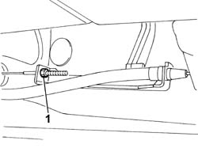
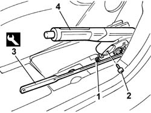

3380A10 HANDBRAKE LEVER - R+R
- Path
- Procedures > 33 BRAKES > 3380 HANDBRAKE > 3380A HANDBRAKE CONTROL AND LINKAGE > 3380A10 HANDBRAKE LEVER - R+R
- Kind
- repair procedure (removal / refitting; the operation number is the code)
- Applies to
- all engines; all production periods
- Interactive page
- https://sloeber94.github.io/elrnDB-fUlss/en/#/179007341
Applies to: all engines; all production periods
 Removing
Removing
 Refitting
RefittingOp. 5530B56 BATTERY DRIP TRAY COVER - R.R.
- Disconnect the negative battery terminal.
Op. 3380A44 HANDBRAKE/LINKAGE PROTECTION - R+R
- Position the vehicle on a lift.
1. Loosen the adjustment nut.

Applies to: all engines; all production periods
1. Disconnect the handbrake cable from the lever.
2. Undo the front retaining bolt
3. Use the appropriate tool to unscrew the rear retaining bolt.
 | Description | Code | Function |
|---|---|---|---|
2 | Spanner | 1.870.749.000 | Loosen/tighten the rear fixing bolt |
- Disconnect the electrical connection.
4. Remove the handbrake lever.

Applies to: all engines; all production periods
Refitting
Removing- Fit the handbrake lever.
- Tighten the front retaining bolt to the recommended torque.
 | Value - daNm | Fastening | Component | Ø |
|---|---|---|---|---|
. | 4.0 | Bolt | HANDBRAKE LEVER | - |
- Use the appropriate tool to tighten the rear retaining bolt to the specified torque.
| Description | Code | Function |
|---|---|---|---|
. | Spanner | 1.870.749.000 | Loosen/tighten the rear fixing bolt |
| Value - daNm | Fastening | Component | Ø |
|---|---|---|---|---|
. | 4.0 | Bolt | HANDBRAKE LEVER | - |
- Connect the electrical connection.
- Connect the handbrake cable to the lever.
- Adjust the handbrake lever travel.
- Remove the vehicle from the lift.
Op. 3380A44 HANDBRAKE/LINKAGE PROTECTION - R+R
- Connect the negative battery terminal.